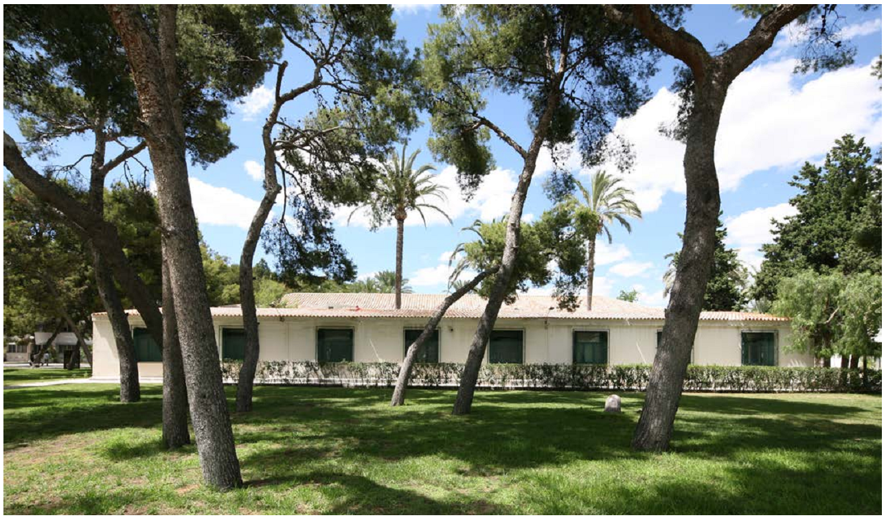
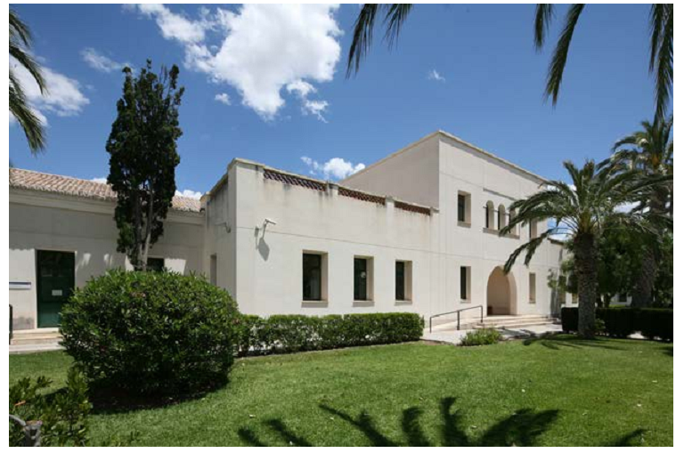
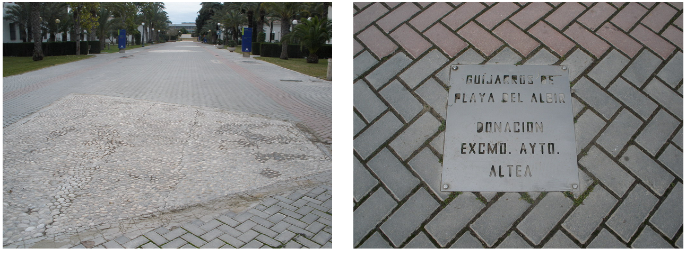
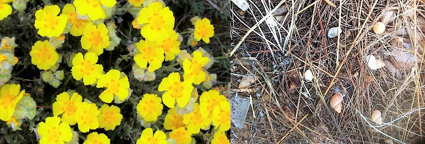

PARADA 4: EDIFICIOS CONSTRUIDOS ANTES DE 1980. PLATJA DE L’ALBIR
El paisaje urbano es también abordado por la Geografía, en estudios de escala de detalle. Todos los pabellones de más baja altura y que tienen la misma estructura, al norte de la zona de las aromáticas, constituyen la parte más antigua de la UA. Fueron los pabellones que albergaron los soldados y cuartel de Rabassa cuando se creó la base aérea de la Región Aérea de Levante. Entre ellos predominan los pinos de Alepo o pino carrasco (Pinus halepensis), conífera característica y dominante en la provincia de Alicante debido a su uso en las repoblaciones forestales de las décadas de los 70 y 80 del siglo pasado. https://www.arbolesibericos.es/genre/pinus/species/pinushalepensis


En el recorrido entre estos edificios y enfrente de la Facultad de Ciencias V, podemos observar en el suelo la donación del Ayuntamiento de Altea de una muestra de los cantos rodados de la Platja de L’Albir.
La geomorfología, rama de la Geografía Física, se dedica a estudiar el modelado terrestre. Dentro de éste, estudiamos el modelado fluvial y costero. ¿Sabías de dónde provienen y cómo se han formado estos cantos rodados? Estos cantos provienen de la erosión del relieve que hay alrededor y que ha sido transportado durante siglos por la rambla de L’Albir o Riuet El Sequet. Las ramblas llevan agua cuando llueve de manera torrencial por lo que tienen una elevada potencia erosiva y de arrastre de material. El agua va rodando los cantos, de ahí que tengan esa forma redondeada. Además una vez llegan a la orilla, el propio oleaje también los moldea.
La Platja de L’Albir forma parte de dos municipios: Altea, al norte, y Alfaz del Pi, al sur, pero en realidad es la misma playa o unidad geomorfológica. Los fondos marinos forman parte del espacio marino protegido del Parque Natural de Serra Gelada.
La cartografía es una herramienta muy útil para la Geografía, es su modo de expresar los elementos que estudia y analiza. En este enlace puedes visualizar esta zona en el visor de la GVA y cargar capas de información territorial: https://visor.gva.es/visor/?extension=752990,4271817,760064,4275271&nivelZoom=15&capasids=Imagen;,Toponimia;,Espacios_Protegidos;10,Unidades_administrativas;9,Unidades_administrativas;8&tcapas=1.0,1.0,1.0,1.0,1.0&idioma=es

Curiosidad: En el parterre situado en la entrada del edificio de la Facultad de Ciencias IV puedes observar una especie endémica del Mediterráneo occidental pero que solo se localiza en el sur de la provincia de Alicante, Melilla, Baleares, Cerdeña, Italia, Argelia y Marruecos. Está catalogada como Vulnerable por la Unión Internacional para la Conservación de la Naturaleza (UICN): Helianthemum caput-felis o jarilla cabeza de gato

Foto tomada por MedSPai
Más información en:
https://dctma.ua.es/es/documentos/geolodia/folletos/gd08-albir-tierra.pdf